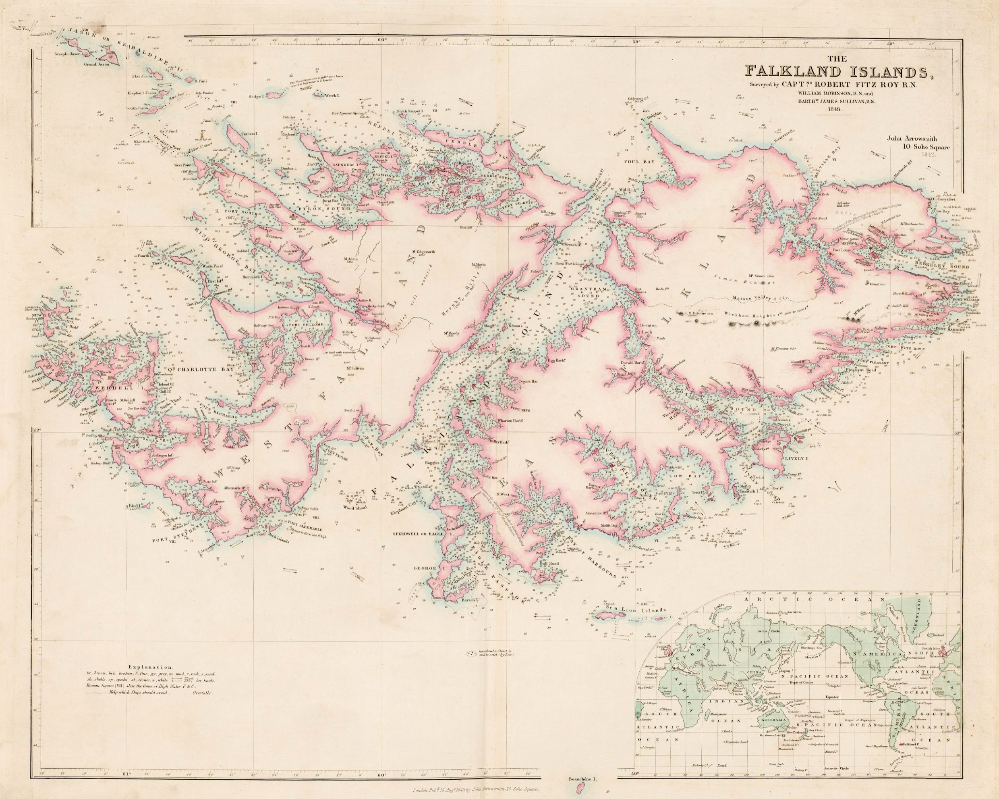
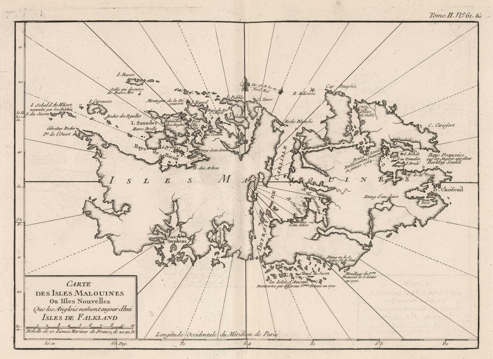
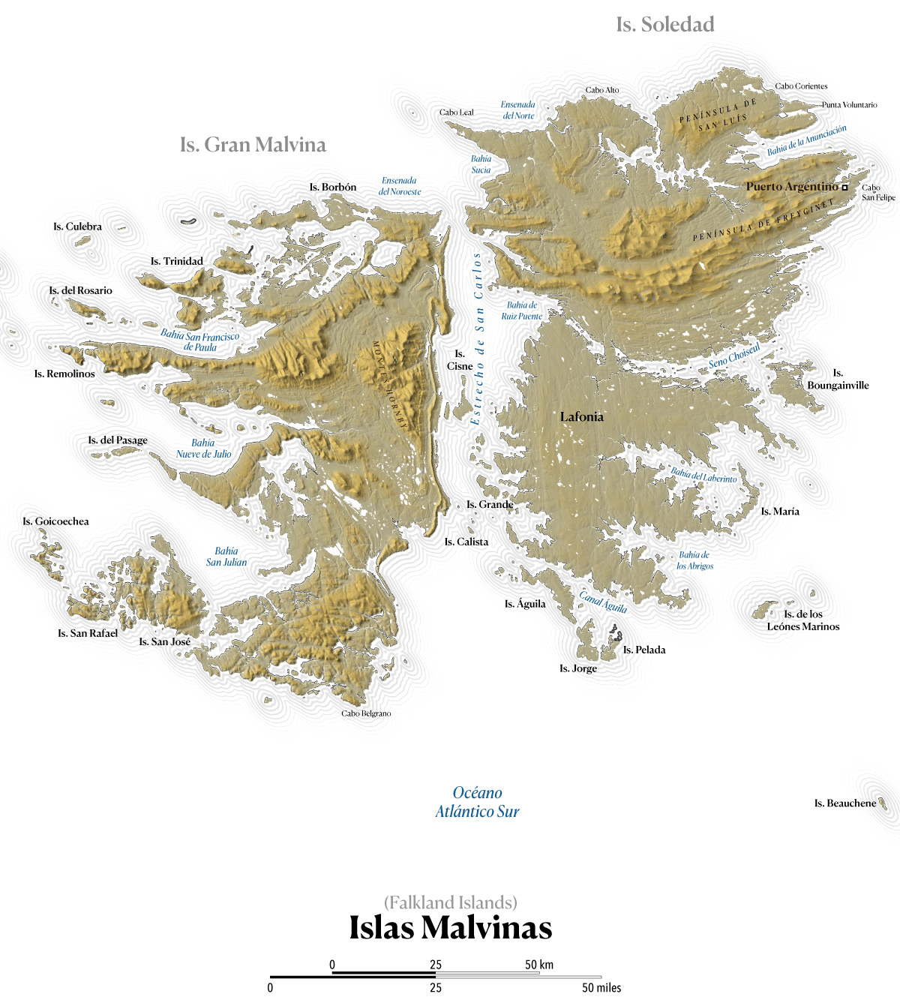
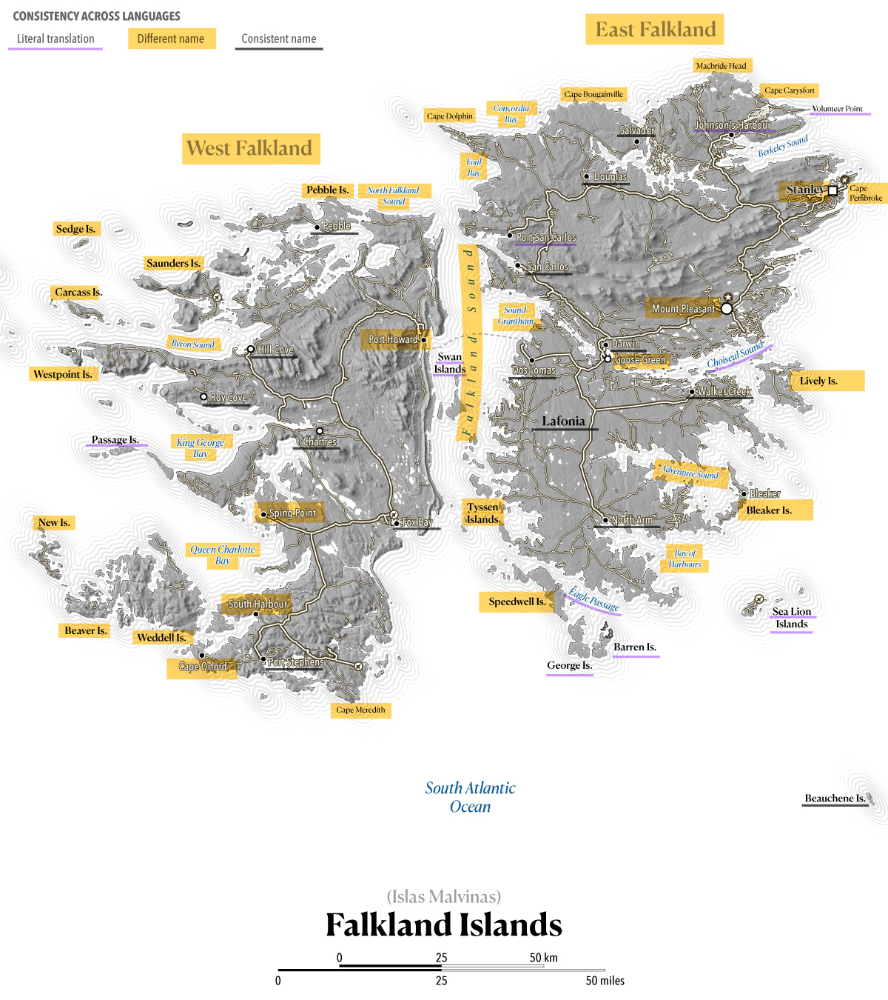
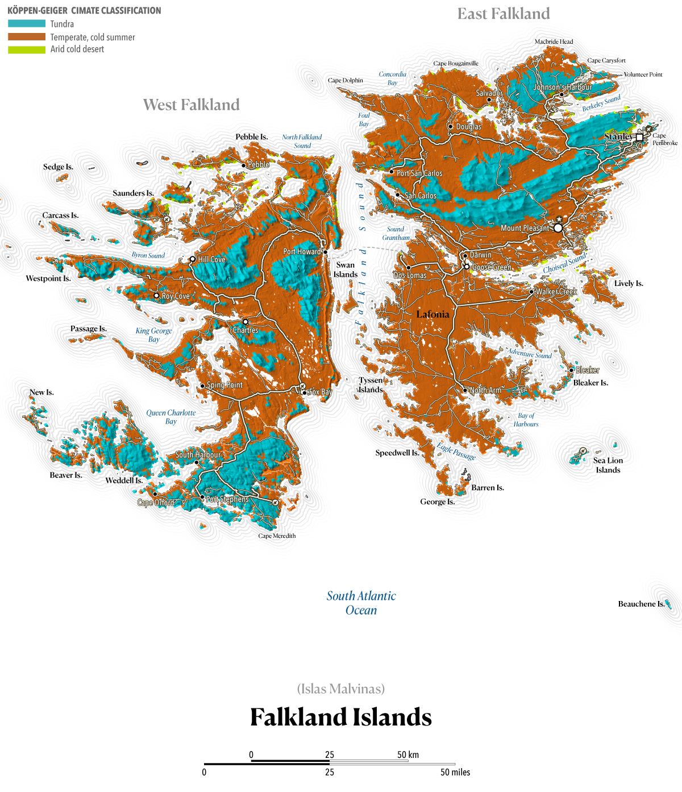
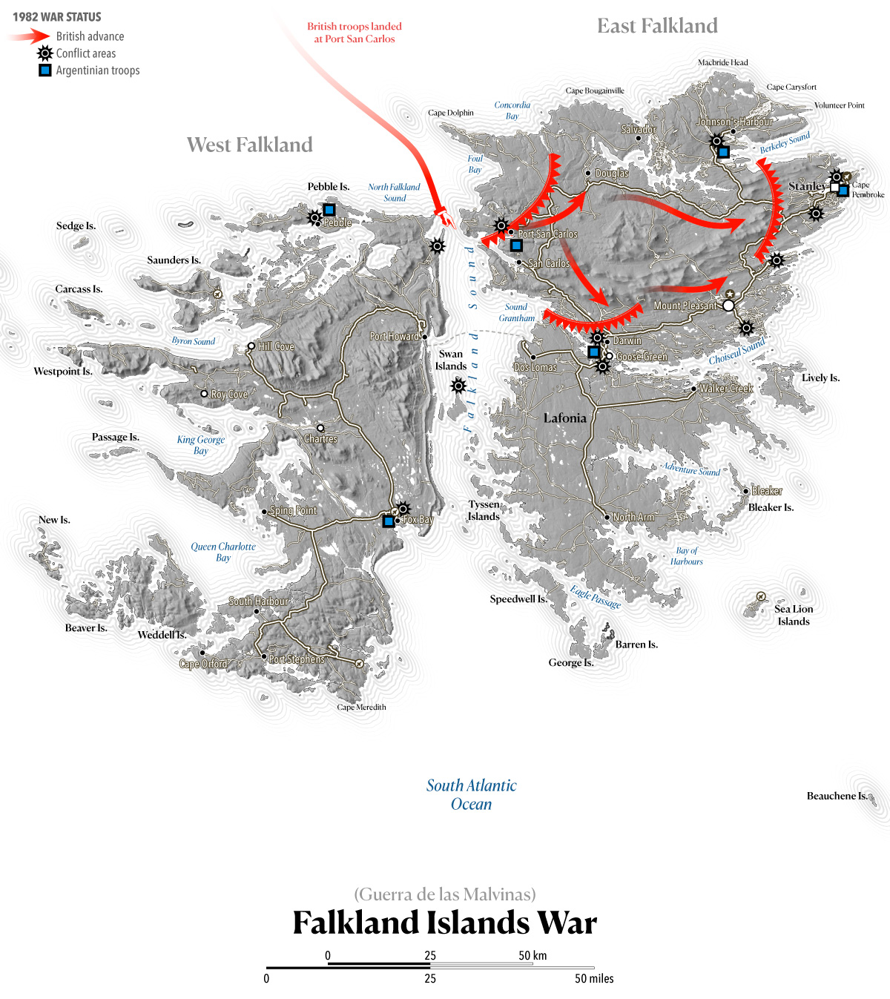
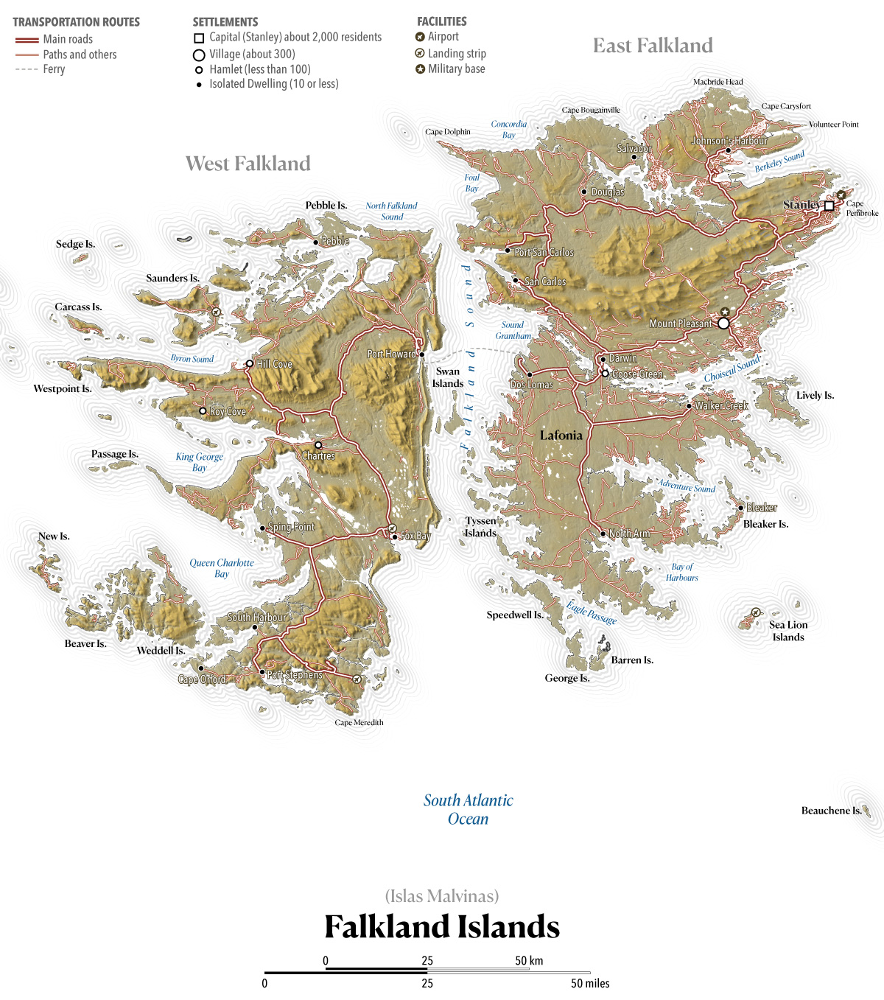
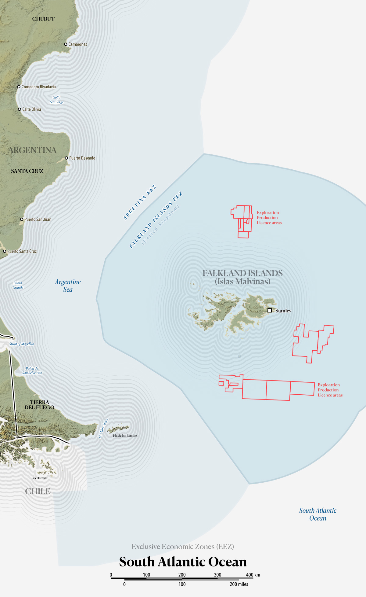

Sept. 2026
Ten maps to better understand the Falkland Islands (Malvinas)
President Trump is often in the news for its foreing policy views and comments, recently he has ignited British tensions with Ireland saying "Irish Unification Would Be Fantastic", breaking decades of neutrality of the U.S. in the matter. Just a few days after he also said that the U.S. would take strong steps against the offshore oil project in the Falklands describing the project as a threat to Argentina’s sovereignty and an attempt to steal its natural resources.
Understanding these conflicts is difficult, there's a lot of history and blood behind each of those conflicts, so here's a selection of ten maps to understand a little better the Falklands (Maldivas). Hopefully, from the non-political and impartial perspective of an international observer like myself.
The Falklands are a self-governing British Overseas Territory located in the South Atlantic Ocean on the Patagonian Shelf, about 300 miles east of the southern coast of Argentina. For hundreds of years this archipelago has seen claims and settlements by the French, the British and Spain. These Islands in the South Atlantic Ocean have had also ups and downs in interest, some times even breaking away from claims and back into them with the winds of politics change. Because of that convulsive past, the naming conventions are a mix and also depends on who you ask.
For example, in English, these territories are known as The Falkland Islands, while in Spanish they are called Malvinas.
The English name was given by John Strong, the captain of the English expedition that arrived on the islands for the first time in 1690. He named the strait that separates the two main islands "Falkland Sound" and consequently the islands with the same name. Captain Strong named the strait in honor of Anthony Cary, 5th Viscount Falkland, the Treasurer of the Navy who sponsored his journey. Here's a map by John Arrowsmith in 1849 from David Rumsey Historical Map Collection.

In the other hand, the Spanish name derives from the French Îles Malouines, a name given by French explorer Louis-Antoine de Bougainville in 1764. The explorer founded the islands' first settlement and name it after the point of departure, port of Saint-Malo. Same as for its English counterpart, David Rumsey Historical Map Collection also has records of these maps showing the original French name, the one below was made by Jacques Nicolas Bellin in 1764. In Aug. 1999, he United Nations adopted the convention to name the archipelago “Falkland Islands (Malvinas)” in all official documents when the langue is English or it equivalent in other languages, and "Islas Malvinas (Falkland Islands)" when the documents are written in Spanish.

While most global locations share similar names across languages or rely on minor phonetic tweaks for translation. This archipelago in the other hand features two entirely distinct sets of names for nearly all its islands and geographic features. These maps sets reflect a mosaic of origins, incorporating French, Spanish, and English nomenclature. For instance, the capital is designated as "Stanley" in English, whereas Spanish maps use "Puerto Argentino" to reflect Argentina's territorial claims. As the maps below demonstrate, the naming conventions vary wildly: some are direct translations, others are entirely new names, and a few remain identical across languages.

Here you can see the changes in names between the two maps (English and Spanish versions), categorized by their consistency. Yellow highlighting indicates a completely new name for the same feature; purple underlining marks a literal translation; and gray underlining indicates that the name is consistent across both languages.

Prior to the 1980's, the economy of these islands was based in farming and sheep, in fact, its flag and coat of arms shows a sheep standing on a little piece of grass surrounded by the ocean.
According to Sentinel land-use classification, these islands consist primarily of grassland, with some areas even completely devoid of vegetation. The Köppen-Geiger classification, provided by Demeter, categorizes the largest portion of the terrain as tundra, a type of biome where tree growth is hindered by frigid temperatures and short growing seasons, the rest is mostly a temperate land with cold summers and tiny portion of arid cold desert.

Between April and June of 1982 about a thousand soldiers lose there life during the Falklands War. The conflict had a significant impact on the islands' population and infrastructure, shaping the course of their subsequent development.

After the end of the war, the economy moved towards oil exploration and tourism. All large settlements are now connected by road and, since 2008, a ferry links West and East Falkland.

And that takes of to today, the Islands are again in the news due to the oil and gas exploration, politicians had decided to take this matter back to the spotlight, if Argentina has sovereignty over the territory the resources would belong to them, however during the 2013 referendum, the islanders were asked whether or not they supported the continuation of their status as an Overseas Territory of the United Kingdom in view of Argentina's call for negotiations on the islands' sovereignty. Voters decided to remain an Overseas Territory of the United Kingdom, with over 99% "yes" vote.

The Argentinian authorities argue that the population in the Falkland Islands is a "transplanted" community placed on "usurped" territory by the British following the expulsion of Argentine authorities in 1833. Based on that, they reject the referendum results.
Although one offhand comment by a politician doesn't necessarily alter a nation's foreign policy, Britain's ongoing territorial disputes remain prone to flashpoints as historical had happened. As a neutral observer, my hope is that the leaders of these countries along with the residents of both this South Atlantic archipelago and Ireland can find a path forward through peaceful bilateral negotiations.
Funtography –Nº21, Sept. 2026
Shareable permanent link ↗